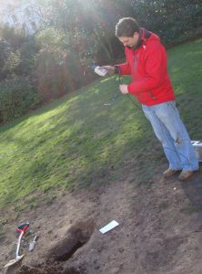

Floodplain Underground Sensor project’s aim is to design and deploy a high‐density, wireless, underground sensor network to quantify floodplain hydro‐ecological interactions. For the purposes of land management, aesthetics and security it is not possible to install sensors or sensor equipment above ground level. A key aspect of the project, and one that makes it challenging and novel, is the wireless networking of sensors entirely below ground. Natural Environment Research Council (NERC) has recognized that although there have been major developments in the technology that allows for the networking of environmental sensors, there remain very few sites where high density network sensors have been installed for research purposes.
FUSE, is a inter-diciplinary project in collaboration with Dr Anne Verhoef , (Soil Physics and Micrometeorology) University of Reading, and is instrumenting a site within the floodplain of the River Thames in Oxford. Yarnton and Pixey Meads are part of the Oxford Meadows Special Area of Conservation (SAC), so this project builds on a monitoring infrastructure and knowledge that has been developed manualy over recent decades. Through the high density sensor network to be installed at the site, and associated manual measurements, the FUSE project aims to improve the understanding of the functioning of hydrological systems and dependent ecology for optimal environmental management. For the purposes of land management, aesthetics and security it is not possible to install sensors above ground level. A key aspect of the project, and one that makes it novel and ground‐breaking, is the wireless networking of sensors below ground. The network of sensors will measure key variables that control plant health and composition, including soil moisture and emperature and groundwater level and temperature. These data will be complemented by manual surveys, including botany, groundwater and soil chemistry and plant functioning. Computer models will be developed on the project which will allow these data to be used to improve our understanding of the intricate interactions between all floodplain ecosystem components.

FUSE is an interdisciplinary research project funded by NERC within their ‘Networks of Sensors’ Programme. It involves environmental scientists from the University of Reading with botanists from the Open University, groundwater scientists from the British Geological Survey, geostatisticians from Rothamsted Research, sensor developers from University of Southampton and environmental modellers from the University of Twente (ITC ‐ The Netherlands) as well as the AESE group. Natural England and the Environment Agency are project partners providing a link between the project outputs and environment managers. This work has unearthed and questioned hither-to understandings of how wireless networking can be achieved in soil and through this new understanding intelligent protocols have emerged.